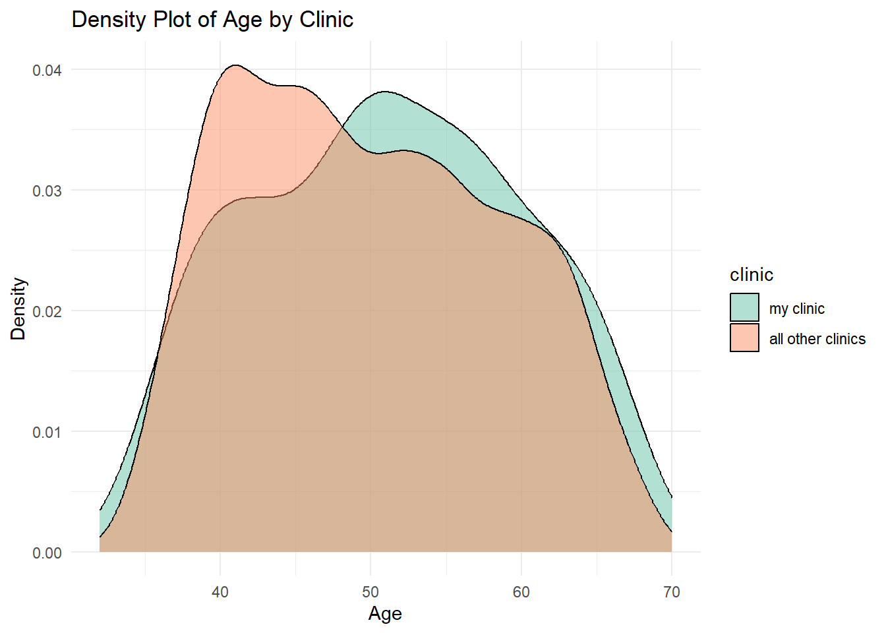
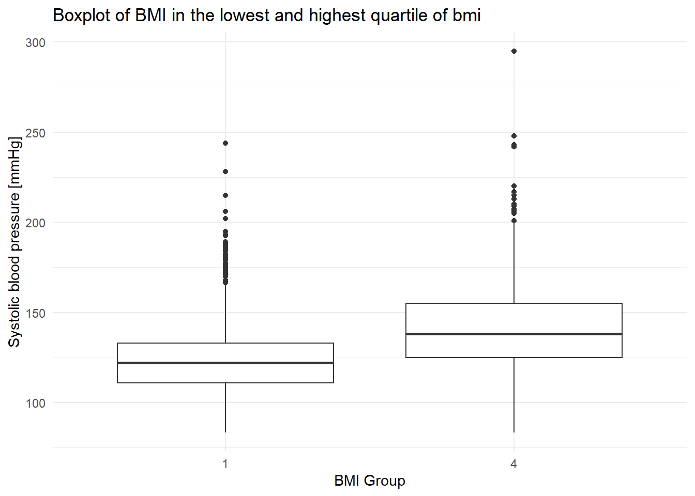

My work involves creating reproducible reports using our medical registry data. Typically, we create two types of reports: ‘registry reports,’ which utilize descriptive statistics from the entire registry, and ‘clinic reports,’ which compare data from one clinic to the aggregated data of all other clinics. Until now, we have been utilizing the statistical software package ‘STATA.’ While STATA allows for reproducible reporting, the project setup process is laborious, and it lacks flexibility in choosing the output format.
RStudio, an open-source statistical package widely used in biomedical research, offers an alternative. Its package called ‘QUARTO’ promises to provide a simpler way of creating reproducible reports with multiple options for output formats.
Aim
Aim of this project is to assess the potential of Rstudio’s ‘QUARTO’-package for reproducible reporting of registry data.
Methods
Dummy data was obtained using the ‘Framingam’ data set (‘riskCommunicator’-package). Dummy department_IDs were created. Please refer to the QUARTO-file for the code.
Table 1.1 Overview: Registry report
Using the ‘tidyverse’-package ‘gtsummary’, an overview-table can be created easily:
Note: I am impressed! - using Stata it would cost me hundreds of lines creating such a table. Interestingly, the source code of “tbl_summary” is not that long: https://rdrr.io/cran/gtsummary/src/R/tbl_summary.R.
Table 1.2 Overview: Clinic report
The table above can easily be adapted to create an overview for a Clinic report simply by adding “by clinic” to the code. Furthermore, the option “p-value” is added:
Characteristic
my clinic, N = 1861
all other clinics, N = 4,2481
p-value2
sex
0.3
f
75 (40%)
1,869 (44%)
m
111 (60%)
2,379 (56%)
Age [y]
0.056
Mean (SD)
51 (9)
50 (9)
Median (IQR)
51 (44, 58)
49 (42, 57)
Range
35, 67
32, 70
BMI [kg/m^2]
0.6
Mean (SD)
25.7 (4.1)
25.9 (4.1)
Median (IQR)
25.1 (23.1, 28.2)
25.5 (23.1, 28.1)
Range
15.5, 39.5
16.0, 56.8
Unknown
0
19
currently smoking
85 (46%)
2,096 (49%)
0.3
Hypertension
59 (32%)
1,371 (32%)
0.9
Diabetes
11 (5.9%)
110 (2.6%)
0.006
1 n (%)
2 Pearson's Chi-squared test; Wilcoxon rank sum test
Note 1: p-values only provide indications of potential differences between my clinic and all other clinics. No correction for repeated testing has been performed.
*Note2: p-values are calculated using the default-options. For an actual report I may consider using t-test e.g. if N>100 vs. Wilcoxon-test for 10<N<100. Of course this needs to be programmed flexibly as I do not have a-priori knowledge of N.
Graph 2.1. Density plot of age
A density plot of the age-distribution in my clinic vs. all other clinics is shown below:
library(gtsummary) # ##### add a density-plot of the variable age:db |> dplyr::select(age,clinic) |>ggplot(aes(x = age, fill = clinic)) +geom_density(alpha =0.5) +xlab("Age") +ylab("Density") +ggtitle("Density Plot of Age by Clinic") +scale_fill_brewer(palette ="Set2") +theme_minimal()

3 Data exploration
3.1 Methods
One could now do a t-test for age between the two groups “my clinic” vs. “all other clinics”. Since this is not very interesting, the following is done instead: Quartiles of BMI are created. Thereafter the hypothesis will be tested that systolic blood pressure (sysbp) is different in the highest vs. lowest quartile of BMI. This will be done for the entire registry (chaptr. 3.2) and for “my clinic” only (chaptr. 3.3).
3.2.1 box-plot of systolic bp
A box-plot of sysbp for quartiles 1 and 4 of BMI is shown below.
library(dplyr)library(rstatix)
Attache Paket: 'rstatix'
Das folgende Objekt ist maskiert 'package:stats':
filter
#str(db)db|>mutate(bmi_group =ntile(bmi, 4)) |>## does it what I expect? i.e. generate --> should be tested... dplyr::filter(bmi_group ==1| bmi_group ==4) |>ggplot(aes(x =as.factor(bmi_group), y = sysbp)) +geom_boxplot() +xlab("BMI Group") +ylab("Systolic blood pressure [mmHg]") +ggtitle("Boxplot of BMI in the lowest and highest quartile of bmi") +theme_minimal()

The graph indeed indicates that there may be a significant (and potentially relevant) difference between the two groups. Let’s do a t-test.
3.2.2 t-test (entire registry data)
Since the number of observations is relatively high in both groups, a t-test can be performed (central limit theorem).
#table(db$bmi_group)# if I do this for the entire registry, I am safe, the numbers are high...### hypothesis: the sysbp is different in the group of the highest and lowest bmi:#### I am now doing a t-test:#?t_testdb|>mutate(bmi_group =ntile(bmi, 4)) |>## does it what I expect? i.e. generate quartiles --> should be tested... dplyr::filter(bmi_group ==1| bmi_group ==4) |># Two-samples unpaired test#:::::::::::::::::::::::::::::::::::::::::t_test(sysbp ~ bmi_group)
Indeed, the p-value of 1.17e-70 indicates extremely strong evidence against the null hypothesis of equal means across groups. Therefore, the observed difference is highly significant.
3.3 Analysis of sysbp within “my clinic”
In the following, the same hypothesis will be tested for the reduced data set of “my clinic”. It is anticipated that due to the lower number of observations and therefore increased likeliness of non-normal data distribution, non-parametric tests will have to be applied.
3.3.1 Histogram and qqplot within “my clinic”
In the following, the histograms and qqplots for both groups, first and fourth quartile of BMI, are shown:
#str(db)#table(db$clinic)db_clin<- db |> dplyr::filter(clinic =="my clinic") |># apparently, I have to use the label of the factor...mutate(bmi_group =ntile(bmi, 4)) |>## does it what I expect? i.e. generate quartiles of bmi --> should be tested... dplyr::filter(bmi_group ==1| bmi_group ==4)#table(db_clin$bmi_group)#str(db_clin)### now I have a a dataset with lower n..# --> let's make a histogram across groupsdb_clin %>%ggplot(aes(sysbp)) +geom_histogram(bins =16, alpha=0.5) +xlab("Systolic blood pressure [mmHg]") +ylab("Count") +ggtitle("Histogram of Systolic Blood Pressure") +theme_minimal() +facet_wrap(~ bmi_group, labeller =labeller(bmi_group =c("1"="1st BMI-quartile", "4"=" 4th BMI-quartile")))
The graphs indicate that the data is not uniformly distributed, particularly for the 4th BMI quartile, where the distribution of sysbp appears to be right-skewed. To test this hypothesis, a Shapiro test is performed.
3.3.2 Shapiro-test
### normality-test:# remember: Ho: normal distribution#db_clin %>%# shapiro_test(sysbp)### test: for-loop:db_clin <-arrange(db_clin, bmi_group)groups <-unique(db_clin$bmi_group) # this will create a vector. How can I change the order? --> by ordering the data first ;-) counter <-0for (group in groups) { counter <- counter +1#print(paste("Printing group:", group))#print(paste("Printing counter:", counter)) df_name <-paste("db_clin_", counter, sep ="") # this concatenatesassign(df_name, db_clin %>%# assigns a value to a name..filter(bmi_group == group))# Perform Shapiro-Wilk test on sysbp variable for each data frame shapiro_result <-shapiro_test(get(df_name)$sysbp)print(paste("Shapiro-Wilk test result for", df_name))print(shapiro_result)}
[1] "Shapiro-Wilk test result for db_clin_1"
# A tibble: 1 x 3
variable statistic p.value
<chr> <dbl> <dbl>
1 get(df_name)$sysbp 0.970 0.268
[1] "Shapiro-Wilk test result for db_clin_2"
# A tibble: 1 x 3
variable statistic p.value
<chr> <dbl> <dbl>
1 get(df_name)$sysbp 0.927 0.00646
# --> since the p-value of one group and both groups together is not in agreement with the H0, I will now perform a non-parametric test.
Note: the Shapiro-test has been performed twice using a for-loop. In the output above “db_clin_1” refers to the first quartile of BMI, “db_clin_2” refers to the 4th quartile of BMI.
For the group with the highest BMI, we obtain a highly significant test-result. This means that the present distribution of data is very unlikely under the null hypothesis of normal distribution. Therefore, the non-parametric Wilcoxon-test is performed.
3.3.3 Wilcoxon-Test
db_clin %>%wilcox_test(sysbp ~ bmi_group)
# A tibble: 1 x 7
.y. group1 group2 n1 n2 statistic p
* <chr> <chr> <chr> <int> <int> <dbl> <dbl>
1 sysbp 1 4 47 46 508 0.0000108
Also in this reduced data-set of “my clinic”, using the non-parametric Wilcoxon-test, a highly significant p-value suggests a highly significant difference between the two groups.
Preliminary conclusion and outlook
Simple reproducible reports can easily be implemented using ‘QUARTO’. One of the next steps is the automated creation of clinic reports using loops (or the mapping functions of the ‘purrr’ package).